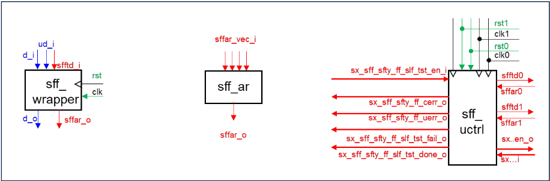
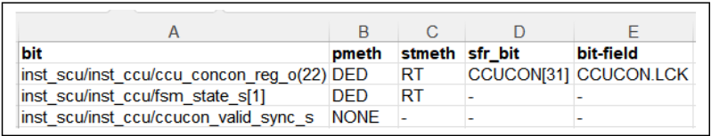

RTL 模块中寄存器安全机制（Safety Mechanism）的自动插入
针对 ISO 26262 要求检测控制安全关键功能的寄存器中的随机位错误、而 Infineon 长期依赖人工将形式化预验证的 SFF 安全组件库集成进 AURIX 等汽车微控制器模块、过程易错且耗时的问题，论文提出把既有自动化集成验证流程扩展为全自动安全机制插入流程。方法以 formal-property-checker 的 TCL 环境为平台，复用 fan-in/fan-out 树追踪、时钟/复位域判定与复位值提取等结构分析例程，并用 ANTLR4 生成的 VHDL parser 将同步进程改写为组合 next-state 进程，自动实例化并配置 SFF-wrapper、SFF-alarm-reductor、SFF-umbrella controller，借助定制布线算法完成跨层次连接，同时生成归纳式形式属性证明 mission function 不受影响，实现 correctness by construction。在数万行代码的 32-bit 微控制器 system control units 试点中，完整代码转换（含时钟域、复位类别与复位值识别）耗时小于 10 分钟，替代了过去数天熟悉概念加数天至数周的人工集成。结论表明从自动验证迈向自动设计生成可行且收益显著。
ISO 26262 要求对控制安全关键功能的寄存器中的随机位错误进行检测，危险失效须被及时捕获并驱动系统进入安全状态。Infineon 在 AURIX 等汽车微控制器的众多 ASIL 模块（如 reset/clock control、memory controller）中人工集成 SFF 安全组件库（SFF-wrapper、SFF-alarm-reductor、SFF-umbrella controller），集成须遵循明确定义的规则；人工方式需要设计工程师研读 work-instruction、花费大量精力改写逻辑，早期版本的 bug 会在后期造成大量调试与修正成本。论文要解决如何将这一人工安全机制集成流程全自动化，在节省人力的同时实现 correctness by construction。
在既有自动化 SFF 集成验证流程基础上，将结构分析例程复用为设计变换原语：以 formal-property-checker 环境的 TCL shell 为平台，利用递归 fan-in/fan-out 树计算追踪 alarm/reset/clock/test-control 信号、判定寄存器的全局时钟与复位域（SFF-domain）并推断 umbrella controller 所需同步逻辑类型、通过伪属性（pseudo property）反例自动提取寄存器复位值；用 ANTLR4 按 VHDL93 文法生成 Python parser，把同步进程中的寄存器写逻辑抽取为组合 next-state 进程（支持多寄存器进程拆分、枚举类型到 bit-vector 的双向转换函数自动生成），随后自底向上实例化并配置 SFF 库组件，配合定制布线算法一次性完成实例化、进程修改与信号连接而无需重新编译；另生成 base case + step case 的归纳式形式属性证明 mission function 保持不变。流程输入为编译后的 RTL 设计与寄存器保护 specification table。
试点对象为 Infineon 32-bit 微控制器系列的 system control units（several 10k lines of code），在原始设计于 formal-property-checking 环境 elaborate 后，完整代码转换（含时钟域、复位类别与复位值识别）耗时 < 10 分钟
人工方法下设计工程师需数天熟悉 register-monitoring 概念、再花数天至数周完成集成；自动流程可节省这部分额外设计工作量
自动流程借助结构分析在 SFF-wrapper 分区上生成更优结果，可更好控制额外 flip-flop 与逻辑门总量（论文未给出具体面积对比数字）
相对已有工作（[2] 的自动化 SFF 集成验证、[3] 的初步研究），本文把'自动化验证'推进到'自动化设计生成'：不仅检查安全机制是否正确安装，而是自动完成安装本身并实现 correctness by construction；将集成验证中已验证的结构分析例程复用为设计变换原语；依托统一、参数化、形式化预验证的安全组件库使相关信号与常量可被自动识别和过滤；作者并论证该基于专家知识加自动结构分析的方法优于需要大量人工变换样本喂养的 generative AI 路线。
相关度级别：high
命中能力域：2.5 功能安全与安全机制 | 2.7 CyberSec/自动化
理由：论文直接命中 2.5 域核心：面向 ISO 26262 ASIL 模块的寄存器级安全机制（DMR/TMR/parity/ECC 保护、alarm 汇聚、self-test）设计与验证，其'从自动化验证走向自动化生成、correctness by construction'的思路与团队安全机制实现和 safety verification 工作直接对应；同时其 TCL/parser 驱动的 RTL 自动化变换与 specification table 驱动流程，与 2.7 域的工程自动化（sign-off checklist、安全文档/数据自动化）方法论一致。团队服务的 LPDDR/HBM4/UCie IP 中存在大量安全关键 CSR/控制/状态寄存器，寄存器保护机制的自动化插入与集成检查方法可借鉴；但论文场景是微控制器 system control 模块而非高速接口 IP，且基于 Infineon 专有 SFF 库，团队需评估自有安全机制库与流程的适配成本。
建议动作：深入精读并做内部分享
Holger Busch，英飞凌（Infineon），慕尼黑，holger.busch@infineon.com
Jonathan Ross，英飞凌（Infineon），慕尼黑（来自慕尼黑工业大学 TUM 的学生雇员），jonathan.ross@gmail.com
摘要——根据汽车行业 ISO-26262 标准，用于安全攸关应用的微控制器片上系统（SoC）模块中控制安全关键功能的寄存器，其随机位错误需要被检测出来。必须通过采取充分且及时的反应，并在对人的生命造成潜在伤害之前将系统驱动至安全状态，来捕获危险的失效模式。迄今为止，英飞凌（Infineon）利用一个经过形式化预验证的参数化安全组件库，已在其汽车微控制器产品系列的众多模块中手动集成了一种特定的寄存器监控机制。这些库组件的集成必须遵循某些明确定义的规则，这一点由针对各模块的专用集成检查来确保。如今我们迈出了下一步：在证明了该安全机制的集成验证可以自动化之后，我们认为此前手动的集成过程本身也应当可以实现自动化。本文总结了如何增强分析与验证例程，从而完全自动化安全机制的安装，使得不仅节省了大量手动设计工作量，还实现了构造正确性（correctness by construction）。
自英飞凌（Infineon）推出第一代 AURIX 微控制器系列以来，我们已在许多必须满足 ISO 26262[1] 所规定的汽车安全完整性等级（ASIL）要求的安全关键模块中集成了寄存器监控机制。例如复位控制单元、时钟控制单元和存储器控制器等系统控制模块。为此，我们开发并持续增强了一个由高度可配置安全组件构成的安全触发器（SafetyFlipFlop, SFF）库（图1），并规定了相应的设计方法及集成规则。从一开始，我们就通过形式化属性检查来支持集成验证，近期还引入了快速结构分析例程[2]。这对于确保这些相当复杂的预定义安全组件被正确安装至关重要。然而，模块设计人员至今仍无法享受同等的支持与自动化。他们不得不研读工作指导书，并投入手工劳动，以稳妥的方式改造先前未受保护的逻辑块，从而在不破坏常规任务功能的前提下加入安全功能，且不丢失任何报警。尽管全面的事后验证保障了发布前最终设计版本的正确性，但错误完全可能出现在早期版本中，即使在设计后期也会造成大量的调试与修正工作。
本文提出了一种自动化方法，可将模块或设计部分（DP）的未受保护寄存器传输级（RTL）设计转换为保留全部原有任务功能的带安全防护版本。其中集成了用于错误检测和可选纠错的附加功能，还包括一种硬件自测试机制，该机制可由客户软件随时启动，且不会中断正常运行。所得的安全架构由插入的、经过形式化验证和现场验证的安全库组件实例以及在这些组件之间生成的连线构成。这些组件封装了全部寄存器功能以及报警逻辑和自测试逻辑，设计人员因此无需重新发明类似的解决方案。此外，自动插入过程避免了可能欠优的实现——这类实现即使功能正确，也会增加超出所需的冗余面积。文献[3]中已开展了初步研究。我们选择脚本语言 TCL[4] 进行实现，因为所使用的形式化属性检查器环境[5]提供了一个 TCL shell，其中包含访问已编译设计数据的基本实用程序，例如常量值、信号扇入等。此外，我们为集成验证流程[2]开发的专有例程可复用于设计转换。只要其他语言和工具环境支持类似的设计数据提取功能，这些例程也可以在其中重新实现。部分例程使用 Python[8] 编写。
本文的组织结构如下。第 II 节概述了硬件安全机制的三个基本库组件。第 III 节大致描述了将该安全机制集成到未受保护设计中的手动方法。第 IV 节简述了有助于结构集成验证的自动化子例程。我们说明了其中部分例程如何用于设计分析，而这些分析是基于库组件建立健全安全架构所必需的。第 V 节解释了用于转换原始寄存器逻辑的子例程。第 VI 节将所有内容整合为我们连贯的自动化寄存器加固流程。第 VII 节讨论了结果，并对近期未来的扩展方向进行了展望。
该 wrapper 包含常规的寄存器功能和可配置的冗余，从而能够检测随机故障。它可以配置自测试功能，以规定的方式翻转冗余位（并可选地同时翻转数据位），以确保报警逻辑和传播正常工作，并检测固定型故障（stuck-at faults）。为此，该 wrapper 具有一个额外的测试输入向量（sfftd_i），用于对自测试的各个阶段进行编码。在每个阶段中，各位按照特定的协议被翻转，使得在测试序列结束时，寄存器中包含正确的功能值。在每个阶段中，报警信号以预定义的方式表现，因此任何偏差都表明安全机制发生了故障。
该 wrapper 具有数据输入向量（d_i）和更新向量（ud_i），从而支持按位精确地写入新值。寄存器的每一位都可以被配置为组合型或时序型、未受保护或受保护、可测试或不可测试。另一个类属参数（generic parameter）允许选择保护方法，例如双模块冗余、三模块冗余、奇偶校验或 ECC 保护。为实现寄存器功能，该 wrapper 具有一个复位输入和一个时钟输入。当有效数据与冗余数据之间出现任何不一致时，报警由组合逻辑生成。
为了减少中央控制器需要处理的域报警数量，来自具有相同时钟和复位域（:= SFF-domain）的不同 wrapper 的报警信号可以在传播之前先进行合并。
所有与报警收集和测试阶段生成相关的控制功能均封装在一个高度可配置的伞形控制器（umbrella controller）中，该控制器为每个 SFF-domain 包含一个独立的域控制器。
除了对从不同 SFF-domain 接收到的报警进行同步和合并之外，伞形控制器还向各域生成测试阶段（test-phase），这可能需要反方向的同步。同步逻辑的生成通过一个类属参数（generic parameter）进行配置，该参数取决于最终报警到安全管理单元（SMU）与各本地域之间的时钟关系。
为了将人工方法实现自动化，需要对其中的各个步骤进行仔细分析。寄存器监控机制的人工集成建议按如下方式进行：首先用 SFF 封装器（SFF-wrapper）替换原始寄存器，然后插入 SFF 报警缩减器（SFF-alarm-reductor），最后安装 SFF 伞形控制器（SFF-umbrella controller），并将所有组件连接在一起。下文总结了集成这些库组件的基本步骤，其中包括这些组件的插入与配置，以及通过层次化模块架构将它们连线互连。
为安装我们的寄存器监控硬件安全机制，提供了三个参数化库组件：寄存器封装器（register wrapper）、报警缩减器（alarm reductor）和伞形控制器（umbrella controller）。与自动化流程无关的 SFF 库组件内部细节在此不予赘述。

所描述的步骤是示意性的，总体上并不十分困难，但手动执行容易出错，并且需要设计工程师付出相当多的精力。
在[2]中，我们描述了自动化的SFF集成验证流程，其中包含的元素对设计变换同样有用。本节对这些可复用的子程序加以总结。此外，还调用了额外的后台算法，在考虑门数量和门面积的前提下生成面积最优的错误检测逻辑。
我们专有的一种极为通用且高效的递归例程，用于确定位或信号的传递扇入与扇出，特别可用于在 SFF 组件与全局模块端口之间追踪报警、复位、时钟和测试控制信号。该例程以一个位或信号作为第一个参数，并可根据第二个参数在位级或信号级上工作。第三个参数可以给定一个直接扇入或扇出函数（由工具环境提供），其后跟随一个表示最大递归深度的数字；若给定值 0，则递归深度不受限制。在这种情况下，当递归到达某个全局输入、先前已访问过的对象或终止列表中的成员之一时，递归即停止。一个全局输出的完整扇入树的深度可达数百层。其余参数用于指定位或信号列表，以实现递归的局部或全局终止。最后，可以选择按深度优先或广度优先方式进行构建；在应用全局终止时，这两种方式会产生不同的结果。在 SFF 集成验证的背景下，这一基本过程被用于多种不同的目的，如下文所述即为其中一例。
另一个例程使我们能够确定已受保护或应受保护的安全关键寄存器的 SFF 域。通过从各寄存器的局部时钟和复位输入出发对全局时钟域和复位域进行追溯，可以识别不同模块组件中寄存器所属的相同 SFF 域。通过将时钟信号经由时钟门控单元追溯至全局时钟输入，我们还能进一步确定时钟之间的关系。据此，我们可以推断是否需要在 SFF-umbrella-controller 中分配同步逻辑，以及需要分配何种类型的同步逻辑。例如，若某个 SFF 域的时钟与全局报警从 SFF-umbrella controller 发送至安全管理单元（SMU）所用的时钟异步，则同步逻辑需要提供双向的握手协议，即既用于向 SFF 域发送测试阶段，又用于接收域报警，从而即使域报警脉冲短于发往 SMU 的外部报警的时钟周期，也不会丢失任何报警。若该时钟所依赖的模块全局时钟输入与全局报警所依赖的不同，则假定其为异步时钟。此类信息用于检查设计工程师是否正确选择了 SFF-umbrella controller 的相应类属参数。在生成 SFF 架构的流程中，该信息被用于自动确定 umbrella controller 的这一配置参数。
所有需受保护的寄存器的规格说明以表格形式给出（图 2），表中针对每个寄存器规定了保护方法（例如双位错误检测（DED））和需保护的位，以及其是否应可自测试（例如通过精简测试（RT：仅翻转冗余位））。如果该规格说明表尚不可用，概念工程部门至少会提供一份寄存器文件，其中规定了所有特殊功能寄存器及位域的位域布局和属性，包括它们的安全属性。一个同样用于自动寄存器验证的专用子例程会在 RTL 设计中定位特殊功能寄存器的实现信号。无论这些特殊功能寄存器是通过 SFF-wrapper 还是普通的未受保护状态信号实现，该子例程均可正常工作。随后，一项 SFF 集成检查会将规定的属性与实际实现进行比对。
该规格说明表至少包含所有安全关键的特殊功能寄存器，并规定其保护与自测试方法。理想情况下，设计、概念与功能安全工程师还应就哪些内部寄存器需要保护达成一致。通过对位于安全关键模块端口和寄存器的扇入与扇出锥中的内部寄存器进行结构分析，我们还可以选择性地为更多内部寄存器的保护生成建议。在这种情况下，先前寄存器的 SFF 属性将被继承到这些新增寄存器上。无论该规格说明表是如何创建的，也无论其中仅包含特殊功能寄存器还是还包含额外的内部寄存器，任何此类规格说明表都将被接受作为自动寄存器保护流程的输入。

在通过结构分析自动确定设计中每个寄存器的复位域之后，会生成一个伪属性，该属性会激活一次复位并产生一个反例。由此，借助形式属性检查器中提供的一个函数，即可提取出该复位域中所有寄存器的复位值，该函数能够从给定的属性反例轨迹或见证轨迹中返回任意信号在任意时间点的位值。对该伪属性的检查速度非常快，并且能够提取出由于属性中的复位激活假设而被复位的所有信号和位的值。
尽管特殊功能寄存器（SFR）验证属于常规功能验证的范畴，但结构性 SFF 集成验证已经能够检查实现 SFR 的 SFF 包装器的复位值和复位域是否与规格说明一致。在我们的 SFF 插入流程中，这些自动确定的复位值被用于配置相应 SFF 包装器的通用复位参数。
一个不属于 SFF 集成验证流程的新子程序负责处理如下转换：将带有寄存器写逻辑的同步 RTL 进程转换为用于计算次态值的组合进程。一些 RTL 设计者遵循这样一种设计风格：为次态逻辑提供一个组合进程，并用第二个同步进程将次态值赋给寄存器信号。在这种情况下，组合进程可以直接保留，而同步进程则被移除，因为寄存器更新改为在 SFF 包装器中实现。如果一个同步进程写入多个寄存器，而其中只有部分寄存器需要被保护，则该进程会被拆分为一个保留无需防护寄存器的进程，以及一个用于需要保护的那些寄存器写数据值的组合进程。对于所有需要连接到 SFF 包装器输入端口的组合次态值和更新向量，会插入新的信号声明。
为了处理设计者尚未将组合逻辑写入独立进程的同步信号赋值，则采用 VHDL 解析器对该进程进行分析。基于该分析，会生成一个新的异步进程，其中信号按照与同步进程相同的条件进行赋值，唯一的改动是移除了时钟边沿条件和复位分支。该解析步骤所获得的信息用于修改现有的 HDL 代码，使得被转换进程中的其他信号保持不受影响，除非它们同样需要被保护到 SFF 中。这不仅确保了需要保护的信号被正确地赋值给 SFF，还确保对可能在同一进程中被赋值的其他信号不产生副作用。在此步骤中使用解析器有助于保证 SFF 集成的正确性，而不受所用语言结构的影响，同时也使转换算法对目标 HDL 的依赖性更低。这对于上文提到的构造即正确（correctness by construction）目标以及该工具 SystemVerilog 版本的开发都尤为重要。
用于提取该信息的解析器是使用 ANother Tool for Language Recognition（ANTLR4）[6] 生成的。该工具能够在给定以扩展巴科斯-诺尔范式（EBNF）表示的文法时，生成以指定目标语言实现的解析器。在本用例中，ANTLR4 结合 VHDL93[7] 标准的文法，生成了以 Python[8] 实现的 VHDL 解析器。选择 Python 作为目标语言是由于其易用性以及与 TCL[9] 相比相对较快的速度，不过，C++ 或 Java 等其他目标语言同样可行。这使得从任何语法正确的 VHDL 文档中获取解析树变得相对简单。ANTLR4 还可用于生成所谓的访问者类（visitor class），其以深度优先搜索的方式遍历此类解析树，并可被修改为在遇到特定语言结构（例如 VHDL 信号赋值）时执行特定操作。随后，这样一个访问者被用于从同步 VHDL 进程中提取构建等效组合进程所需的信息。
fsm_seq_p : PROCESS(clk_i, reset_n_i) BEGIN -- fsm_seq_p IF (reset_n_i = '0') THEN --SFFed: fsm_state_s <= IDLE; --SFFed: ccucon_reg_o <= (OTHERS => '0'); idle_s <= '1'; ELSIF (clk_i'EVENT AND clk_i = '1') THEN CASE fsm_state_s IS WHEN IDLE => idle_s <= '1'; IF (ccucon_valid_sync = '1') THEN --SFFed fsm_state_s <= CAPTURE; END IF; WHEN CAPTURE => idle_s <= '0'; IF (reload_i = '1') THEN -- SFFed: fsm_state_s <= ACK; --SFFed ccucon_reg_o <= ccucon_i; END IF; WHEN ACK => idle_s <= '0'; IF (ccucon_valid_sync = '0') THEN --SFFed fsm_state_s <= IDLE; ... END IF; WHEN OTHERS => idle_s <= '1'; --SFFed: fsm_state_s <= IDLE; END CASE; END IF; END PROCESS fsm_seq_p;
fsm_comb_p : PROCESS(ccucon_reg_o, fsm_state_s, reload_i, ccucon_i) BEGIN -- fsm_comb_p nx_ccucon_reg_o <= ccucon_reg_o; upd_ccucon_reg_o <= (others => '0'); nx_fsm_state_s <= fsm_state_s; upd_fsm_state_s <= (others => '0'); CASE fsm_state_s IS WHEN IDLE => IF (ccucon_valid_sync = '1') THEN nx_fsm_state_s <= CAPTURE; upd_fsm_state_s <= (others => '1'); END IF; WHEN CAPTURE => IF (reload_i = '1') THEN nx_fsm_state_s <= ACK; upd_fsm_state_s <= (others => '1'); nx_ccucon_reg_o <= ccucon_i; upd_ccucon_reg_o <= (others => '1'); END IF; WHEN ACK => IF (ccucon_valid_sync = '0') THEN nx_fsm_state_s <= IDLE; upd_fsm_state_s <= (others => '1'); END IF; WHEN OTHERS => nx_fsm_state_s <= IDLE; upd_fsm_state_s <= (others => '1'); END CASE; END PROCESS fsm_comb_p;
图 3 中的代码示例展示了转换后的同步进程，其中寄存器 fsm_state_s 和 ccucon_reg_o 被加固，而寄存器 idle_s 则保持不受保护。同步进程中所有被移入图 4 所示新组合进程的赋值语句仅被注释掉。该组合进程保留了原同步进程时钟控制子块的控制结构。
在上述示例中，受保护的寄存器 ccucon_reg_o 已经是位向量类型，但对于状态信号 fsm_state_s，如图 4 所示的组合进程的结果需要从原始的枚举类型转换为位向量类型。对于枚举类型，存在可用的编码，可直接用于生成双向的转换函数。要么是 RTL 设计者已经定义了默认编码，要么是已经添加了 enum_attribute 来引入用户自定义的编码，后者可能是出于安全目的的独热编码（one-hot encoding）。尤其是在后一种情况下，独热编码是否仍然必要是值得质疑的，因为该寄存器现在将由 SFF 机制加以保护。就目前而言，我们使用原始编码来实现枚举类型到位向量类型的转换以及反向转换。这些转换函数由一个读取类型声明的子例程自动生成。在上述示例中，假设类型声明如下：
TYPE fsm_t IS (IDLE, CAPTURE, ACK);
ATTRIBUTE enum_encoding OF fsm_t: TYPE IS "001 010 100"; (6)
生成的 VHDL 转换函数直接遵循该编码。
FUNCTION conv_fsm_t_sulv(ARG : fsm_type) RETURN std_ulogic_vector IS BEGIN CASE ARG is WHEN IDLE => RETURN '001'; WHEN CAPTURE => RETURN '010'; WHEN ACK => RETURN '100'; WHEN OTHERS => RETURN '000'; END CASE; END conv_fsm_t_sulv;
FUNCTION conv_sulv_fsm_t(ARG: std_ulogic_vector) RETURN fsm_type IS BEGIN CASE ARG is WHEN '001' => RETURN IDLE; WHEN '010' => RETURN CAPTURE; WHEN '100' => RETURN ACK; WHEN OTHERS => RETURN IDLE; END CASE; END conv_sulv_fsm_t;
若采用标准编码，则只需使用 VHDL 属性 'pos 即可实现此目的。
inst_sff_wrapper_wrp0: sff_wrapper GENERIC MAP ( sff_pmeth_g => sff_pded_c,…) PORT MAP ( clk_i => clk_i, reset_n_i => reset_n_i, …, sff_d_i => nxv_wrp0_s, sff_ud_i => upd_wrp0_s,sff_d_o => wrp0_s,sffar_o => sffar_o); nxv_wrp0_s <= conv_fsm_t_sulv(nx_fsm_state_s) & nx_ccucon_reg_o; upd_wrp0_s <= upd_fsm_state_s & upd_ccucon_reg_o; ccucon_reg_o <= wrp0_s(ccucon_reg_o'range); fsm_state_reg_o <= conv_sulv_state_t(wrp0_s(nxv_wrp0_s'left downto ccucon_reg_o'length);
经过转换与拼接后的次态向量和更新向量被连接到相应的 SFF-wrapper 输入端，其输出则被转换回原格式并赋值给原始信号，即此前作为未受保护寄存器信号的那个信号。在图 8 所示的示例中，我们假设前文提到的两个信号被一起保护，且保护方法被配置为 'double-error-detection'，正如前述规格表中所假定选择的那样。
完整的顶层流程接收编译后的 RTL 设计以及一个包含待保护寄存器的规格表。其内部包含四个主要步骤：
由于自动 SFF 集成流程需要连接自动生成的组件以及尚不存在的实例和信号，因此开发了一种定制的布线算法来完成 SFF 集成所需的特定布线任务。这还带来了一个额外的好处：SFF 实例化、进程修改和信号布线可以在一步之内完成而无需重新编译，从而加快了集成流程。为实现这一点，前文用于将同步信号赋值转换为异步赋值的同一个解析器被复用，以连接将 SFF 组件集成到设计中所需要的新实例。
此外，还生成了专用的形式化属性，并配合实例化原始设计组件与受保护设计组件的 wrapper 架构，以证明任务功能不受设计变换的影响。这些属性的结构与常规的归纳证明类似：包含一个基础情形，在复位之后检查对应信号位的等价性；以及一个步进情形，检查等价性从一个周期到下一个周期得以保持。
如果某个模块设计中已经包含 SFF，则可能出现这样的情况：在非安全应用中，针对用于不同用例的某个特定其他产品，决定不再保护某些先前已受保护的寄存器，从而节省冗余面积。由于 SFF-wrapper 可以被配置为像普通触发器那样实现各个位，因此自动流程中采用的方法是相应地调整配置参数，而将 SFF-wrapper 保留在模块中。如果最终得到的 SFF-wrapper 的所有位都被配置为不受保护，则其报警输出直接保持不连接。
总而言之，该自动流程基于用户规格和设计分析生成实现方案，对寄存器赋值进程进行变换，自底向上地插入并配置 SFF 库组件，并将这些组件贯穿实例层次结构进行布线，直至连接到模块接口。
作为先导试点，我们已验证了该流程对来自英飞凌（Infineon）32位微控制器系列、具有数万行代码的系统控制单元的适用性；在原始未受保护的设计于形式属性检查环境中完成细化（elaboration）、从而能够运行所有结构分析之后，完整的代码变换（包括时钟域、复位类别和复位值的识别）耗时 < 10 分钟。
由于在我们当前的产品系列中，寄存器监控机制已经通过手工方式安装，因此自动化流程在实际生产使用中的收益要到未来的产品系列中才能完全显现。尽管如此，当前产品系列的新派生型号很可能仍会有所变更，届时自动流程不仅将用于修改受保护的寄存器集合，还将用于对安全架构进行优化，以降低面积消耗和不必要的信号复杂度——后者也会影响手工生成的 RTL 代码的可读性。
总体而言，我们认为新流程具有以下主要优点：
迄今为止，设计工程师采用手工方法需要花费数天时间来熟悉寄存器监控概念，随后还需要数天至数周的时间来集成安全机制，而这一切都叠加在任务功能的常规设计工作量之上。采用自动流程后，这部分额外工作量即可节省下来。
自动化流程借助结构分析能够生成最优结果，而通常情况下，对安全机制缺乏深入了解的设计工程师难以凭借自身能力达到这一效果。特别是，将寄存器触发器划分到各个 SFF-wrapper 中会影响额外触发器和逻辑门的总数量，而自动流程能够更好地控制这一数量。
尽管我们声称能够通过构造保证正确性（correctness by construction），但我们并不建议跳过集成验证；不过我们预计至少能够节省验证、缺陷分析和修正方面的工作量。
我们计划支持 SystemVerilog[11] 设计，以及对先前手工编写的已加防护设计进行优化。由于开发过程是以代表性模块为实例驱动的，对于使用了尚不支持的罕见 HDL 特性的设计，我们可能需要对该流程加以扩充。在最坏的情况下，设计工程师仍然可以更新自动生成的安全增强，但其工作量将远少于过去完全手工添加安全组件的方式。尽管我们所提出的方法基于公司专有的安全库，但这一通用方法也可应用于其他由预定义组件构成的库——这些组件封装了可配置的功能，并附带定义良好且机器可读的集成规则，此类库也可能由第三方 IP 供应商提供。
总体而言，我们得出结论：从自动验证迈向设计生成这一步是可行的，而且非常有益。这种自动化因一种统一的设计概念而得以简化，该概念基于定义良好的库组件，使所有相关信号和常量都能够被识别和筛选。所得到的 RTL 设计可以像以往完全手工编写的 RTL 设计那样进行处理，并在后续步骤中遵循 ISO 26262 规定的物理隔离规则。与任何自动化流程一样，其真正的收益取决于应用的频率以及每次所节省的工作量。在我们那些包含许多受安全保护的 ASIL D 模块和不同产品衍生型号的芯片项目中，这一方法是具有优势的。
我们相信，我们的方法基于专家知识以及针对该安全机制的经验，并结合自动化设计分析，（仍然？）优于生成式人工智能（AI）——后者必须以大量可能欠优的手工变换设计作为输入，这些设计出自对方法论理解程度不一的各个设计者之手，而他们可能无法完全掌握设计内部所有复杂的信号依赖关系。